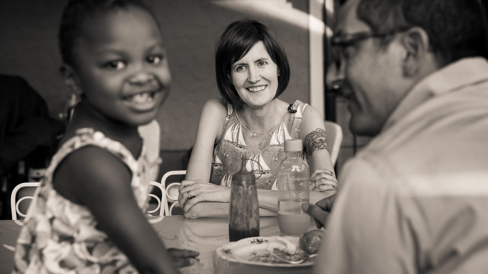
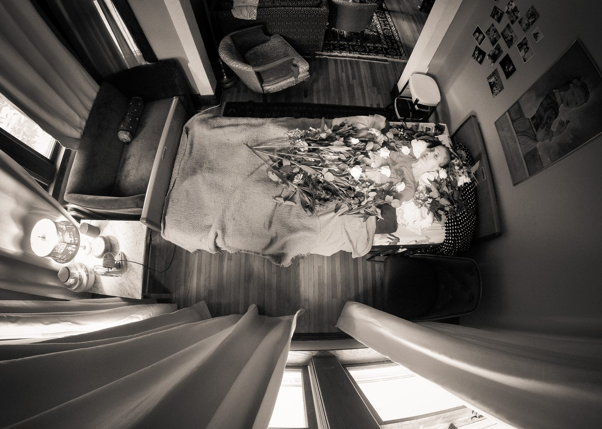
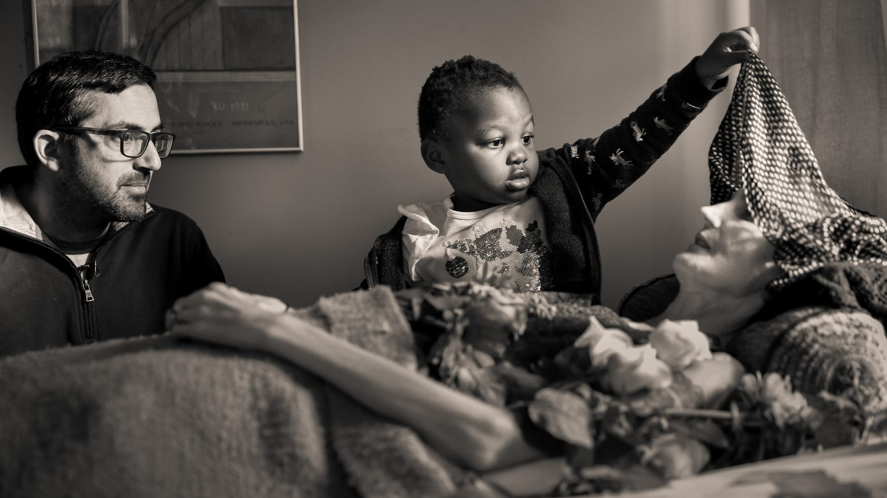
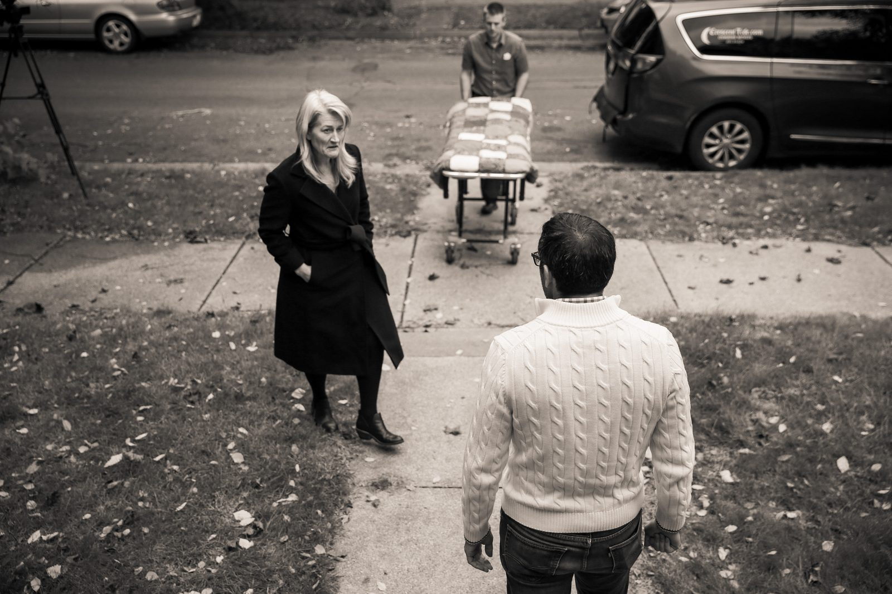
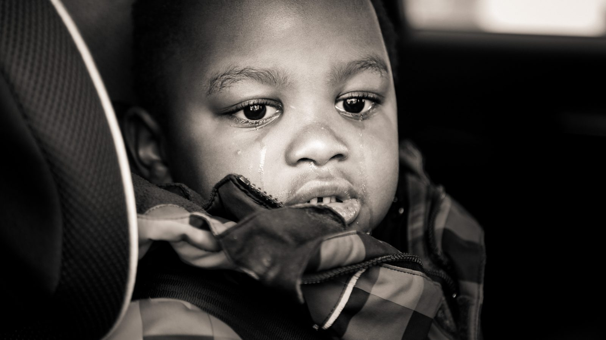
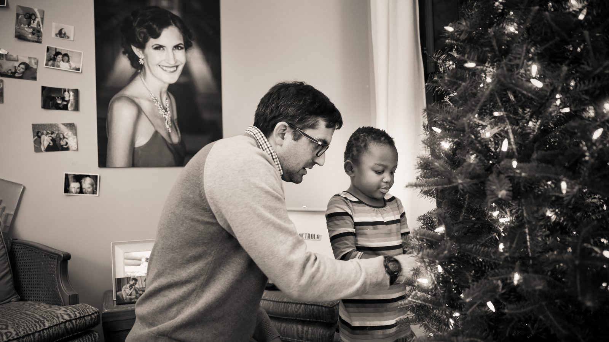
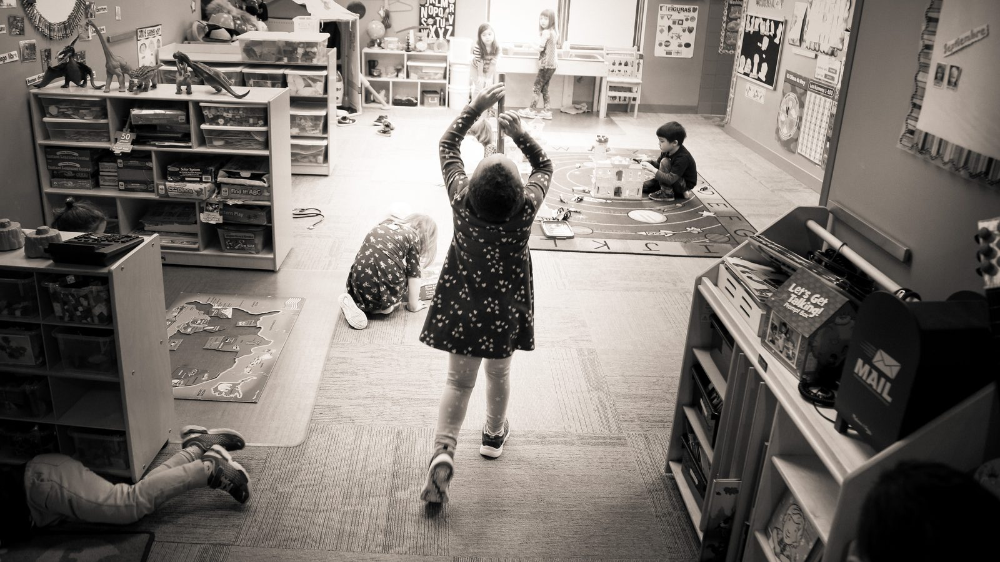

Press & Festivals
For programmers and press
Everything you need to consider, program or write about Emily Hope, in one place.
For a screener link, write to bengarvin@gmail.com or lseavert@gmail.com.
Logline and synopses
Logline
A terminally ill Minneapolis mother meticulously plans her own unconventional death while preparing her young adopted daughter for a life without her.
Short synopsis
Emily Hope is an intimate vérité documentary about a mother racing against time to prepare her young adopted daughter for a future without her. Tender and unflinching, the film explores love, grief, resilience, and the quiet courage of telling a child the truth.
Long synopsis
Emily Hope began as a film about green burial and the ways we prepare for death. Then filmmaker Ben Garvin met Emily Hope Hofher, a Minneapolis mother living with terminal illness who was facing an impossible question: how do you prepare your young daughter for a life without you?
Filmed intimately over several years, the vérité documentary follows Emily, her adopted daughter Ruby and her husband Rob through ordinary days at home, a visit with Ruby’s birth family, and the home vigil and green burial Emily designed for herself. Rob explains everything to Ruby and lets her spend time with her mother’s body at home; months later, father and daughter decorate the Christmas tree beneath Emily’s portrait.
Tender and unflinching, Emily Hope is less a film about dying than about parenting, love, and the courage it takes to tell a child the truth. Directed by Ben Garvin and Lindsey Seavert, the duPont–Columbia Award–winning team behind Love Them First.
Specifications
| Title | Emily Hope |
|---|---|
| Genre | Documentary (vérité) |
| Running time | 60 minutes |
| Year | 2026 |
| Country | United States |
| Language | English |
| Exhibition format | DCP available |
| Status | Post-production; seeking festival premiere |
| Directors | Ben Garvin, Lindsey Seavert |
| Production company | Tiny Window Pictures, Minneapolis |
Directors’ statement, bios and full credits are on The Film page.
Production stills
These stills may be used in coverage and festival materials about Emily Hope. Please credit Ben Garvin / Tiny Window Pictures and do not crop in ways that change the meaning of an image or alter them.

Download full resolution


Download full resolution


Download full resolution


Download full resolution


Download full resolution


Download full resolution


Download full resolution


Download full resolution


Download full resolution


Download full resolution

Contact
For festival programming, screeners, interviews and press inquiries, contact the directors directly:
Ben Garvin · bengarvin@gmail.com
Lindsey Seavert · lseavert@gmail.com